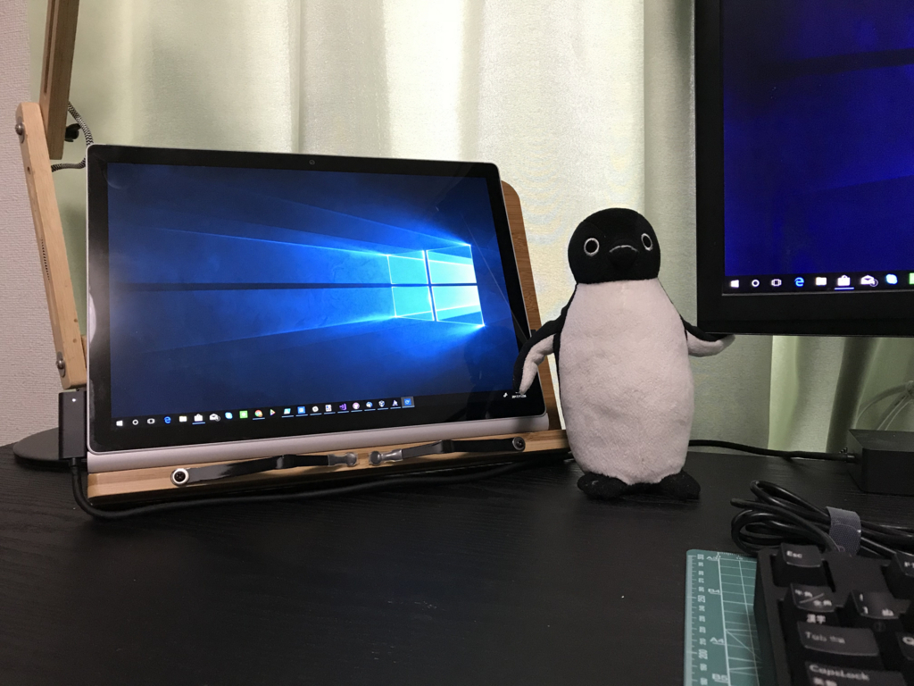
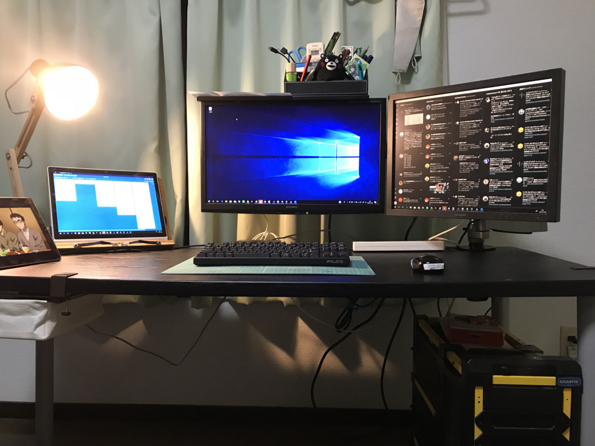
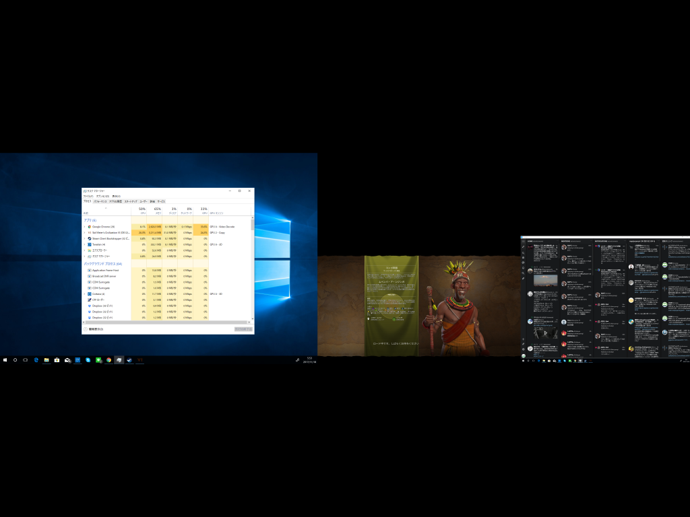
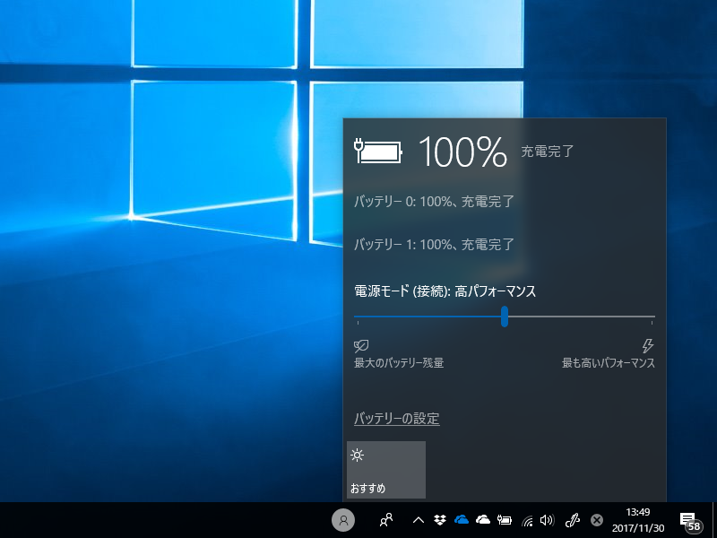
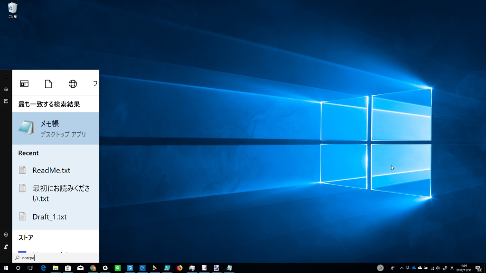
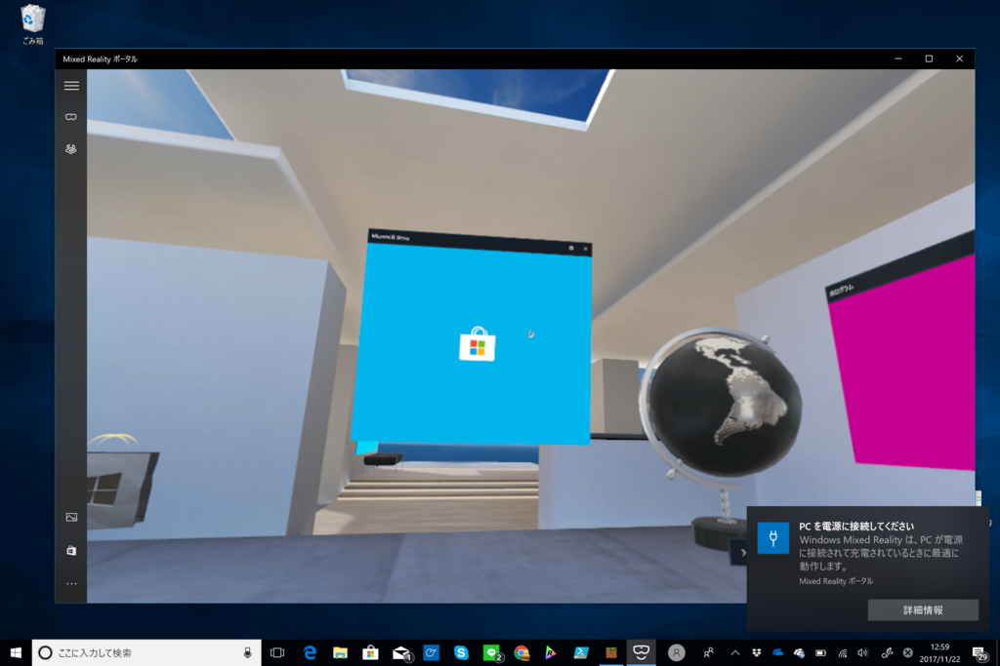
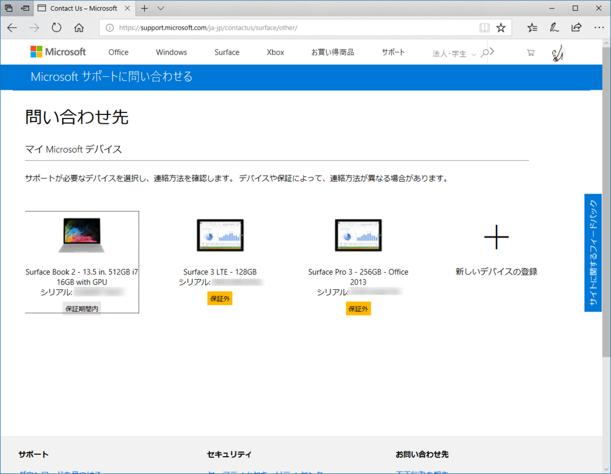

Surface Book 2 がやってきて2週間経ちました
公開日：

Surface Book 2 が我が家にやってきて2週間経ったので、気になったことでもメモしていこうかと思います。網羅的なレビューは商業媒体にお任せするとして、ウチはもっぱら自分の気になったところだけ書いていくやで。
ちなみに、ウチで購入したのは HNL-00012（Core i7/メモリ16GB/SSD 512GB/GPU搭載）モデルです。
![マイクロソフト Surface Book 2 [サーフェス ブック 2 ノートパソコン] Office Premium 搭載 13.5 インチ PixelSense? ディスプレイ Core i7/16GB/512GB GPU搭載 HNL-00012](https://images-fe.ssl-images-amazon.com/images/I/41ZfBwrzJxL._SL160_.jpg "マイクロソフト Surface Book 2 [サーフェス ブック 2 ノートパソコン] Office Premium 搭載 13.5 インチ PixelSense? ディスプレイ Core i7/16GB/512GB GPU搭載 HNL-00012")
ハードウェアスペックについても書こうかなって思ったのですが、@shibayan のブログを読めば十分な気がするので割愛。
デスクトップとして利用する

ウチでは Surface Book 2 にドックを接続して、もっぱらデスクトップマシンとして使っています。3画面で快適、快適。ちなみに左端の Surface はディスプレイを通常とは逆に刺して、キーボードをたたんで書見台に立てかけてあります。

（モニターのリアルなデカさと解像度は一致しないのだ！）
パフォーマンスも十分。今まで使ってた PC では Civilization 6 のロードがオープニングナレーションの完了に間に合わなかったのですが、Surface Book 2 ならばナレーションをぶった切ってゲームを始められます。真ん中の画面で Civ をしながら、右の画面で Twitter、左の画面で Slack を確認って感じで遊んでいます。

ちなみに Fall Creators Update では電源パネルのスライダーで簡単にパフォーマンスを調節できるのですが、“もっとも高いパフォーマンス”にすると GPU をあんまり使ってくれないのかな？ かえってファンがうるさいです。うちは真ん中にしていますが、これだとディスクリート GPU をキッチリ使ってくれて、ファンの騒音も許容範囲内です。もっとも、このあたりの動作はあんまりよくわかってないけど……。
モバイルとして利用する
リビングのこたつへ移動する場合は、ドックのケーブルを抜いてモバイル端末に変身です。ムービー再生で公称17時間のバッテリー持続時間はめちゃくちゃ頼りになる。その代わり重量はちょっと厳しいものがあるかも。僕は無職の引きこもりなんでまったく問題にはならないのですが、毎日の通勤では持ち運びしたくないかもね。
分離してタブレットにすると、大きさの割にすごく軽く感じるのだけど、まぁ、現状タブレットで使いたいと思うことがあまりないので……Surface Pro みたいにキックスタンドはないし、予算が足りなくて Surface Pen を買えていないというものある。まぁ、最大の原因は Surface 3/iPad Pro ももってて、そっちのが使いやすいというのがデカい（ぇ
それはともかく、ドックに刺せばまたすぐさまデスクトップとして使えるので、割とリビングに持ち出すことは増えました。ただ、ちょっとバグ臭い挙動はあるかも。

- スタート画面で検索すると、スケーリングがおかしくなる（タイルとかは大丈夫
- メインディスプレイの設定がときどきおかしくなる（もう一度設定しなおせば直る
それ以外の、たとえばモニターの配置なんかはとくに問題なく切り替えられてる感じがします。マイナーそうな使い方をしてる割には、言うほど不具合はないなってのが正直な感想。
Windows Mixed Reality ヘッドセットをつなぐ

Surface Book 2 のセールスポイントはいろいろありますけど、個人的には Windows Mixed Reality Ultra Ready なところも見逃せないと思います。無印でよければ Surface Laptop でもよかったんですが、フル機能の Ultra は Surface Book 2じゃないとスペックが足りません。ちょっと無理して i7/GPU 付きにしたのも、このためだったといえなくはない。
使い勝手は……最初はなんかエラーとかも出たのですが、今はなぜか馴染んで、フツーに動いています。ちょっと注意しなければならないのは、Book 2 は外部モニター出力が USB-C なこと。このまえ Mini Display Port → HDMI 2.0 アダプターを買ったばかりなのに、また USB-C → HDMI 2.0 アダプターを買う羽目になりました。

この前痛い目にあったので、今回はちゃんとアダプターの互換性を前もって調べておきました。これなら大丈夫。
残念な点は、USB-C と USB 3.0 のコネクターが両端に分かれていることでしょうか。ヘッドセットをつなぐと、二股に分かれた線を両脇につながないといけないのが面倒くさい……USB-C 一本で繋げられたらいいのにな（もしかして、現状でもハブとか使えばイケるの？）。
外部ストレージ
Surface Book 2 にはフルサイズの SD カードリーダーが内蔵されています。ウチの手持ちのカメラは
- Nikon 1 V3: microSD カード
- Nikon Df: SD カード
なので、大変都合がよろしい。日頃は SD カード変換アダプタ―をフタ代わりに指しとけば、いざというときにどっちでも対応できそう。
ただ、SD カードサイズだと Surface Book 2 から少しはみ出るんですよね……というわけで、ちょっと寸詰まりの microSD カードリーダーを追加購入しました。

BaseQi iSDA 高精度 アルミニウム製 MicroSD カード アダプター (Microsoft Surface book 13.5")
- 出版社/メーカー: BASEQI
- メディア: Personal Computers
- この商品を含むブログを見る
初代 Surface Book 向けの製品のようですが、Book 2 でもしっかりフィットしました。この手の microSD カードリーダーはフルサイズならタダでついてくることも多いのでちょっとお高く感じますが、かなりお勧めの製品だと思います。Macbook Pro 向けもあるのかな？ そっち方面はよく知らないんだけど。
気になるハードウェアの不具合
最後に気になる点を何点か。
まず、開封して電源を入れたらキーボードが英語配列の設定になっていた。Surface Laptop でもそうだったんだけど、こういうのは本当にお粗末だと思う。
なんらかの理由で出荷時の設定が難しいのであれば、Surface アプリから自動で行えるようにするとか、回避策を用意しておいてほしい。
次に、これはウチの端末固有かもしれないけれど、冷却ファンから軽い異音がする。シャリシャリ、カリカリといった、ちょうどハードディスクが営業中のときみたいな音。音量は……時によって違うんだけど、大きいときはエアコンをつけていても気になるレベル。
まぁ、それ自体は別に放置でもいいんだけど、「これって修理が必要なレベルですかね？」と軽く聞きたいのに、適当なサポートチャンネルがない。電話は時間が合わんし、オンラインだと途中から先に進めないし。

（他の2つはクリックすると先に進めるが、Book 2 は反応がない。Edge/Chrome でテスト）
Build とかでステキ技術発表してるんだし、さっさとプレビューでいいから投入してくれればいいのに。専用のサポートアプリを作ってるんだから、そこから手軽にメッセージを投げられるようにするとか。
あと、これは稀だけど、音が割れる。通知音が割り込んでくる場合とかが比較的危ない感じ？ まぁ、これは「稀によくある」レベルだからそんなに気にはしていない。
Surface Book 2 になってちょっと変わったこと
大体そんなこんなだけど、Surface Book 2 になって一つ、Windows の使い方が変わったところがある――それは、たまにコルタナさんを呼ぶようになったこと。デスクトップ PC だとマイクだって外付けだし、なんか呼んでも応えてくれないとか不安定なところがあった。でも、Surface はオールインワンで調整済みだからか、割とスムーズに使える。あぁ、こんな感じで使える、意外に身近な機能だったんだな……と認識を改めた。
でも、品質は残念この上ないレベルなので、ときどきいじめながら、暇があればフィードバックしてもいいなって思う。
なんつうか、もう PC を本格的に自作するときはこない気がしてきた。Windows Hello 認証にちょっとだけ感動した時も思ったけど、多少お金はかかっても、全部入りで、全部そろって、全部至れり尽くせりなんだから、これを買わない理由はないわ。
個人的評価は★3.5。冷却ファンの問題が改善されたら★4.2、コルタナがスーパー進化してくれたら★4.5 かな。割と気に入ってるから、今月はお金がもうないけど、来月の予算で追加サポートを契約しようと思う。割とヘビーに使ってるから、万が一の時は速攻対応してほしいし。
しかし、3万円か……結構するなぁ……。